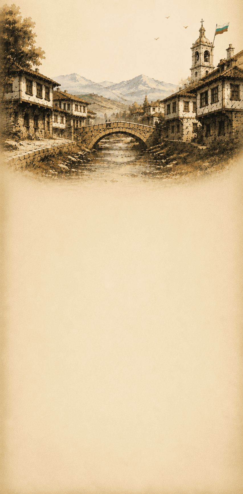

„Под игото“ е игра на скрити роли, доверие и стратегия. Целта ти зависи от ролята, която си получил. Работи с другите... или ги предай.
Ти си част от революционното движение. Целта ти е да разкриеш предателите и да спечелите свободата.
Ти си предател, който работи в полза на врага. Целта ти е да попречиш на революционерите и да останеш скрит.
Ти си неутрален играч, който не принадлежи към никоя от страните. Целта ти е да останеш скрит и да избегнеш да бъдеш изгонен.
Създай стая или се присъедини към съществуваща. Изчакай всички играчи да се присъединят.
На всеки играч се раздава карта с роля. Не я разкривай на другите!
Играчите обсъждат кой може да бъде предател. Споделяй мнение, задавай въпроси, анализирай другите.
Всички гласуват за съмнителен играч. Играчът с най-много гласове бива изгонен от играта.
Разкрива се ролята на изгонения играч. Играта продължава до постигане на победа.
Ако всички предатели бъдат разкрити и прогонени.
Ако предателите останат повече или са равни на революционерите.